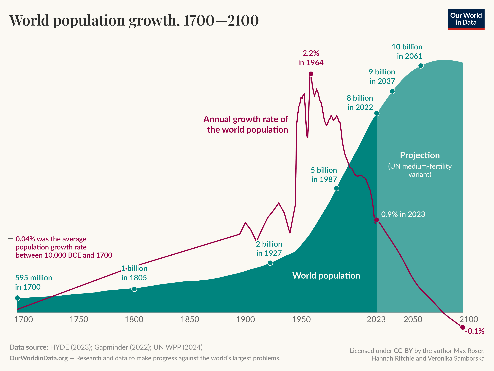

1 Introduction
While biology is the study of living organisms, mathematical biology is the application of mathematical tools to give enhanced understanding of biological systems. In particular, we will study equations that capture the key features of a given system. Constructing such models requires stripping away the systems complex nature and identifying a handfull of key quantities required to describe how the system changes.
The key quantities we consider broadly fall into two categories: fixed quantities that do not change in time, called constants, and quantities that evolve in time, called dynamical variables. Quantities whose values are specified a priori are called parameters, and are typically constant in time (though can be dynamic with clear defined behaviour), while quantities whose values are determined by the model are called variables or degrees of freedom.
When we say that a quantity changes in time, an important consideration is whether time is modeled as continuous, \(t \in \mathbb{R}^+\), such that changes occur infinitesimally, or discrete, \(t \in \mathbb{N}\), such that changes occur in finite steps (e.g., yearly updates).
1.1 Population Dynamics
A key problem in biology is modelling mathematically how the population of various species changes over time (tracking births, deaths and migration). This might be quite abstract when studying, for example, the population of a chemical. As with our general approach we must identify the salient dynamical degrees of freedom (variables that change over time), the most obvious of which is, \[N(t) - \text{Population change as a function of time},\]
though there may be other variables involved.
1.2 Exponential Growth
If we assume the simplest population model with fixed birth rate and death rate, then every member of the species has the same fixed probability of giving birth and dying. For a change in time \(\Delta t\) the number of births is \(b\,\Delta t\) and the number of total deaths is \(d\, \Delta t\), where we call \(b\) the birth rate and \(d\) the death rate, such that,
\[ N(t + \Delta t) = N(t) + (b - d)N(t)\Delta t. \tag{1.1}\]
If \(\Delta t\) is finite then this is a discrete exponential model (called the Malthusian model) and if it is infinitesimal \(\Delta t \rightarrow 0\) then we have the first order continous differential equation,
\[ \frac{dN}{dt} = (b-d)N. \tag{1.2}\]
which we know the solution to from our courses on ODEs,
\[ N = N_0 \, e^{(b-d)t} \tag{1.3}\]
where \(N_0\) is the initial population at time \(t=0\). Note that this model predicts that population grows or shrinks (depending on the sign of \(b-d\)) indefinitely. Unsurprisingly such a simplistic model is rarely accurate.
It is important to note that in everyday language the word exponential is often used not to refer to a system with such behaviour, for example you will have no doubt heard people refer to the exponential growth of the world population, which can be seen in Figure 1.1. For most of our history (until the 1960’s) we have experienced super-exponential growth (where the exponent \(b-d\) increases with time) and since then \(b-d\) has started to decrease. It is even predicted that the exponent may become negative in the future leading to population decrease.

1.3 Logistic Equation and Population Caps
To modify the above simplistic approach we might consider a variable birth and death rate that depends on population,
\[ \begin{align} N_{t+1} = \left( b(N_t) - d(N_t) \right) N_t & - \text{Discrete model,}\\ \frac{dN}{dt} = \left( b(N) - d(N) \right) N & - \text{Continous model,} \end{align} \tag{1.4}\] which is hardly a model without understanding how the general functions \(b(N)\) or \(d(N)\) change in time.
The simplest extension of the above exponential growth is to make \(d\) and \(b\) linear in \(N\) such that for a continous system we have the quadratic,
\[ \frac{dN}{dt} = rN - \lambda N^2 \tag{1.5}\]
where \(r,\lambda > 0\) are constants. This continous ODE now has a population cap as small populations will grow and large populations shrink. It is easier to see this if we rewrite such that, \[ \frac{dN}{dt} = r\left( 1 - \frac{N}{K} \right)N,\qquad \text{where} \quad K = \frac{r}{\lambda}, \tag{1.6}\] here \(K\) is often refered to as a carrying capacity. This is called the logistic equation. It exhibits logarithmic solutions and we will study this system later in the course (both continous and discrete).
1.4 Nondimensionalisation
In mathematical biology we are intrested in studying trends and comparing different models without focussing imediately on direct measurement. A useful way of abstracting our models so we can easily compare for example population models of bacteria and elephants on very different scales is nondimensionalisation, where we make variables dimensionless. To achieve this, we absorb some of the constants in the equations into the dynamical variables e.g. for Equation 1.6 we can define, \[ n = \frac{N}{K} \qquad \tau = rt \tag{1.7}\]
such that the equation becomes the simpler,
\[ \frac{dn}{d\tau} = n(1-n). \tag{1.8}\]
So we have now stripped away all the parameters that are unnecessary for studying the features of behaviours of the model. It is easy to revert back to the original equation by simply substituting back in for \(n\) and \(\tau\). Note, be careful with absorbing signs e.g. for Equation 1.2, the exponential growth model, if we defined \(\tau = (b-d)N\) and \(d > b\) then we have reversed time and it may look like population always grows.